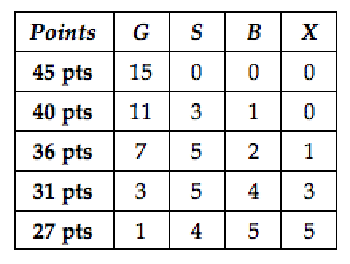

#questions channel on Slack.Borrowing language from the 2019 Google J-term course here at Smith, when learning in a classroom setting, at any moment, we exist in one of three zones: safe, stretch, or strain.
The material in this course challenges our understanding of statistics and probabilty. Several of the topics are subtle and require iterative engagement. The goal for this course is to spend the vast majority of our time in the stretch zone. In this zone, the material is just beyond our current knowledge base and while we are a bit uncomfortable with the material, we can see possible paths to tie the new material into our existing knowledge. In other words, in this class, our brains should be stretching, but not straining.
At the end of each week, if you have not been surprised or challenged, or if you have no questions about the material, this could mean that you are in the safe or strain zones. If you find yourself exasperated or negative about the class, you may be in the strain zone. If you find yourself using words like “boring” or “easy”, you are likely in the safe zone. If you are in either zone, please come to student hours, make an appointment, or send us a slack. We want you to get the most out of this course, but we cannot help you if we do not have firsthand knowledge of what is going on.
The strain zone is never a fun place to be during a class. As you work to return to the stretch zone, you might consider the following questions:
#questions?” Even better: “Am I answering my peers’ questions on Slack?”The course does have a calculus pre-requisite. Having experience with calculus and/or statistics does not guarantee you success in this course, nor does having no experience mean that you are not set-up to succeed in this course. Success in this course will be determined by a student’s willingness to ask questions, grapple with challenging concepts, and to persistently take small meaningful steps towards deeper understanding and facility with the concepts.
A rough topic schedule and corresponding readings are posted below on the main page of this course webpage. We will draw from the following sources:
See Term Project page. While your term project grade is only based on your final resubmission on the last day of class, your level of contributions at all the intermediate steps (data, proposal, and initial submission) will affect your engagement grade; see Engagement below.
At the end of the semester, your collected badges and badge levels will be converted into points for your final grade: 
Being part of a professional community has many parts; we generate and consume knowledge, we review and critique work, and we present to and learn from each other. The edge of what we know is constantly being pushed further and further as we discover new ideas, create new knowledge, and ask new questions. At times, we are computers, writers, and contractors, and then at other times, we serve as reviewers, mentors, and learners. The constancy is our willingness to be present and active within our professional community. With this in mind, in this course, your participation is expected, especially you’ll only get out of this class as much as you put in. That being said, here are multiple pathways for you to stay engaged in this class: Google Doc.
Participation can take many forms, including but not limited to: attending class meetings, being active on our course slack, participating in discussion in class, offering ideas and questions in class or on slack. Beyond attending class, our class as a community will generate a list of what we believe are ways to engage and participate in our course. Adding to this list one way that you are called to participate in this course. If you find yourself unwilling or resistant to adding to this list, examine this. What is holding you back? What would help propel you to action?
The engagement part of the course will be graded with student input. In the week before spring break and during the last week of classes, you will be asked to complete a self-evaluation of your class engagement in context of the class engagement list. Your self-evaluations will be a critical part of determining this section of your grade, but not the only determining factor.
Being at a school with an Honor Code, like Smith, is a special privilege. The Honor Code goes beyond inviting students to act with integrity, instead it welcomes students as equal participants of the learning community, imbuing students with the same level of trust that we extend to our collaborators and colleagues. The Smith College Honor Code, established in 1944, and as stated in the Student Handbook, says:
Smith College expects all students to be honest and committed to the principles of academic and intellectual integrity in their preparation and submission of course work and examinations. Students and faculty at Smith are part of an academic community defined by its commitment to scholarship, which depends on scrupulous and attentive acknowledgement of all sources of information, and honest and respectful use of college resources.
This trust bestowed to students in the Honor Code is the same trust that exists in and among researchers within a research community, the same trust that exists between us and our collaborators. Simply put, at Smith, under the Honor Code, I trust that you will each act with integrity, citing sources when you celebrate others’ ideas and noting who you work with when collaborating.
This trust manifests in how assignments are created, in how work is completed, and in how we resolve instances where the trust has been broken. At an Honor Code school, assignments are created knowing that while there are resources online that can offer complete solutions, you are trusted to not seek out such complete resources and that if you do stumble on a solution guide, you will not use it. Under an Honor Code, students are expected to keep careful notes about the resources that they consult and the people that they collaborate with. We get to assume that the work handed in by a student is the creation of that student. Lastly, when there are violations of the Honor Code, the resolution is determined by a committee established by the community and trusted to seek restoration of the whole community’s trust through education and action.
We regard the Honor Code with deep and profound respect. Being educators at an Honor Code school means we begin from a place of trust without any underlying suspicion of our students. Simply put, we - instructors and students - work from the assumption that all are acting in good faith and with the utmost integrity. This is an assumption that cannot be made at a school without an Honor code, and it is why it is a privilege to be both an instructor and a student at Smith under the Honor Code.
The work you submit should be your own and created by you. We do encourage you to ask for help from your peers or myself when you have questions; however, copying is never allowed. The line between copying and helping is subtle. Below are a few guidelines:
If you think you may have crossed the line between helping and copying, please talk to your instructor or your lab instructor about it. Do not let us discover that the line was crossed. If a violation of the Honor Code is suspected, the student will be informed and will be given the opportunity to meet with the instructor. As recommended by the Academic Honor Board and in keeping with Smith tradition, the student will be given time to self-report, and after such time, the suspected violation will be reported to the Academic Honor Board by the instructor.
Smith is committed to providing support services and reasonable accommodations to all students with disabilities. To request an accommodation, please register with the Disability Services Office at the beginning of the semester. To do so, call 413.585.2071 to arrange an appointment with Laura Rauscher, Director of Disability Services.
Once you have received an accommodation letter, please provided your instructor with a printed copy.
Parts of this course - including slides, activities, and notes - will be from a variety of sources. Materials will be appropriately attributed and will be used in keeping with copyright and fair use laws.
As the instructor and assistants for this course, we are committed to making participation in this course a harassment-free experience for everyone, regardless of level of experience, gender, gender identity and expression, sexual orientation, disability, personal appearance, body size, race, ethnicity, age, or religion. Examples of unacceptable behavior by participants in this course include the use of sexual language or imagery, derogatory comments or personal attacks, trolling, public or private harassment, insults, or other unprofessional conduct.
As the instructor and assistants we have the right and responsibility to point out and stop behavior that is not aligned to this Code of Conduct. Participants who do not follow the Code of Conduct may be reprimanded for such behavior. Instances of abusive, harassing, or otherwise unacceptable behavior may be reported by contacting the instructor.
All students, the instructor, the lab instructor, and all assistants are expected to adhere to this Code of Conduct in all settings for this course: lectures, labs, office hours, tutoring hours, and over Slack.
This Code of Conduct is adapted from the Contributor Covenant, version 1.0.0, available here.